Nature...is inexorable and immutable; she never transgresses the laws imposed upon her, or cares a whit whether her abstruse reasons and methods of operation are understandable to men.
The topic of moving media marks a departure from the content covered in topics 1-5. The wave equation in (nonaccelerating) motion (which can be either the motion of the observer or the motion of the background fluid) is first derived. The Doppler effect is then discussed. The remainder of the section deals with applications of the theory.
Contents:
The wave equation in the presence of a uniform velocity flow field \(\vec{v}_0\) is first derived by linearizing and combining the appropriate continuity, momentum, and state equations. See Blackstock's "Fundamentals of Physical Acoustics" page 93, for a simpler version of this derivation (which is confined to a particular flow field in Cartesian coordinates). This was not presented in class, but it was an unassigned homework problem.
The exact continuity, momentum, and state equations are \begin{align} \frac{D\rho}{Dt} + \rho \divergence \vec{v} = 0\,, \quad \rho \frac{D\vec{v}}{Dt} + \gradient P = 0\,,\quad P = P(\rho)\,, \label{eq:exact}\tag{1} \end{align} where \(D/Dt = \partial/\partial t + \vec{v}\cdot \gradient\) is the material derivative. It is to be shown that linearizing these equations, where \(P = P_0 + p\), \(\rho = \rho_0 + \rho'\), and \(\vec{v} =\vec{v}_0 + \vec{u}\), leads to \begin{align} \Laplacian p = \frac{1}{c_0^2} \frac{\mathcal{D}^2 p}{\mathcal{D} t^2}\,, \end{align} where \(\mathcal{D}/\mathcal{D} t = \partial/\partial t + \vec{v}_0 \cdot \gradient\).
Begin by writing Eqs. \eqref{eq:exact} in terms of \(\partial/\partial t + \vec{v}\cdot \gradient\) (rather than in terms of \(D/Dt\)): \begin{align}\tag{2}\label{eq:exact:d} \begin{split} \frac{\partial \rho}{\partial t} + \vec{v} \cdot \gradient \rho + \rho \divergence \vec{v} &= 0\\ \rho \left(\frac{\partial \vec{v}}{\partial t} + \vec{v} \cdot \gradient \vec{v} \right) + \gradient P &= 0\\ P(\rho) &= P\,. \end{split} \end{align} Now insert \(P = P_0 + p\), \(\rho = \rho_0 + \rho'\), and \(\vec{v} =\vec{v}_0 + \vec{u}\) into Eqs. \eqref{eq:exact:d}, and note that \(\partial \rho_0/\partial t = 0\), \(\gradient \rho_0 = \vec{0}\), \(\divergence \vec{v}_0 = 0\), \(\partial \vec{v}/\partial t = 0\), \(\gradient \vec{v}_0=0\), and \(\gradient P_0 = 0\): \begin{align}\tag{3}\label{eq:exact:alg:1} \begin{split} \frac{\partial \rho'}{\partial t} + (\vec{v}_0 + \vec{u}) \cdot \gradient \rho' + (\rho_0 + \rho') \divergence \vec{u} &= 0\\ (\rho_0 + \rho')\left[\frac{\partial \vec{u}}{\partial t} + (\vec{v}_0 + \vec{u}) \cdot \gradient \vec{u} \right] + \gradient p &= 0\\ P(\rho_0 + \rho') &= P\,. \end{split} \end{align} Nonlinear terms in Eqs. \eqref{eq:exact:alg:1} are now neglected. For the state equation, the linearization is achieved by Taylor expanding the function \(P(\rho)\) to linear order: \begin{align}\label{eq:alg:2}\tag{4} \begin{split} %\frac{\partial \rho'}{\partial t} + \vec{v}_0 \cdot \gradient \rho' + \rho_0 \divergence(\vec{v}_0 + \vec{u}) + \rho' \divergence (\vec{v}_0 + \vec{u}) &= 0\\ \frac{\partial \rho'}{\partial t} + \vec{v}_0 \cdot \gradient \rho' + \rho_0 \divergence \vec{u} &= 0\\ %(\rho_0 + \rho' )\left[\frac{\partial \vec{u}}{\partial t} + \vec{v}_0 \cdot \gradient \vec{u} \right] + %gradient p &= 0\\ %\rho_0\left(\frac{\partial \vec{u}}{\partial t} + \vec{v}_0 \cdot \gradient \vec{u} \right) + \rho' \left(\frac{\partial \vec{u}}{\partial t} + \vec{v}_0 \cdot \gradient \vec{u} \right) + \gradient p &= 0\\ \rho_0\left(\frac{\partial \vec{u}}{\partial t} + \vec{v}_0 \cdot \gradient \vec{u} \right) + \gradient p &= 0\\ P_0 + \left(\frac{\partial P}{\partial \rho}\right)_0 (\rho-\rho_0) &= P\,. \end{split} \end{align} In the state equation [the third of Eqs. \eqref{eq:alg:2}], the quantities \(p = P-P_0\), \(\rho' = \rho-\rho_0\), and \((\partial P/\partial \rho)_0 = c_0^2\) are identified, resulting in the familiar state equation, \[\rho' = p/c_0^2\,.\] The perturbation density \(\rho'\) is therefore eliminated from Eqs. \eqref{eq:alg:2}: \begin{align} \frac{1}{c_0^2}\frac{\partial p}{\partial t} + \frac{1}{c_0^2}\vec{v}_0 \cdot \gradient p + \rho_0 \divergence \vec{u} &= 0 \label{eq:cont}\tag{5}\\ \rho_0\frac{\partial \vec{u}}{\partial t} + \rho_0 \vec{v}_0 \cdot \gradient \vec{u} + \gradient p &= 0\,.\label{eq:mom}\tag{6} \end{align} Taking the time derivative of Eq. \eqref{eq:cont} and the divergence of Eq. \eqref{eq:mom} results in \begin{align} \frac{1}{c_0^2}\frac{\partial^2 p}{\partial t^2} + \frac{1}{c_0^2}\vec{v}_0 \cdot \gradient \left(\frac{\partial p}{\partial t}\right) + \rho_0 \divergence \left(\frac{\partial \vec{u}}{\partial t}\right) &= 0 \label{eq:cont:alg:1}\tag{7}\\ \rho_0\divergence \left(\frac{\partial \vec{u}}{\partial t}\right) + \rho_0 \vec{v}_0 \cdot (\divergence \gradient \vec{u}) + \Laplacian p &= 0\,. \label{eq:mom:alg:1}\tag{8} \end{align} Subtracting Eq. \eqref{eq:cont:alg:1} from Eq. \eqref{eq:mom:alg:1}, the \(\rho_0\divergence ({\partial \vec{u}}/{\partial t})\) terms cancel, resulting in \begin{align} %\Laplacian p - \frac{1}{c_0^2}\frac{\partial^2 p}{\partial t^2} + \rho_0 \vec{v}_0 \cdot (\divergence \gradient \vec{u}) - \frac{1}{c_0^2}\vec{v}_0 \cdot \gradient \left(\frac{\partial p}{\partial t}\right) &= 0\notag\\ \Laplacian p &= \frac{1}{c_0^2}\frac{\partial^2 p}{\partial t^2} - \rho_0 \vec{v}_0 \cdot (\divergence \gradient \vec{u}) + \frac{1}{c_0^2}\vec{v}_0 \cdot \gradient \left(\frac{\partial p}{\partial t}\right) \,.\label{eq:wave:alg:1}\tag{9} \end{align} The particle velocity needs to be eliminated from Eq. \eqref{eq:wave:alg:1}. This is done by taking the gradient of Eq. \eqref{eq:cont}: \begin{align*} \frac{1}{c_0^2}\gradient \left(\frac{\partial p}{\partial t}\right) + \frac{1}{c_0^2}\vec{v}_0 \Laplacian p + \rho_0 \gradient(\divergence \vec{u}) &= 0\,. \end{align*} Noting that \(\gradient(\divergence \vec{u}) = \divergence (\gradient \vec{u})\) and solving for \(\rho_0 \gradient (\divergence \vec{u})\) yields \begin{align} \rho_0 \divergence (\gradient \vec{u}) &= -\frac{1}{c_0^2}\gradient \left(\frac{\partial p}{\partial t}\right) - \frac{1}{c_0^2}\vec{v}_0 \Laplacian p\,.\label{eq:alg}\tag{10} \end{align} Inserting Eq. \eqref{eq:alg} in for \(\rho_0(\divergence \gradient \vec{u})\) in Eq. \eqref{eq:wave:alg:1} results in \begin{align} \Laplacian p &= \frac{1}{c_0^2}\frac{\partial^2 p}{\partial t^2} - \vec{v}_0 \cdot \left[-\frac{1}{c_0^2}\gradient \left(\frac{\partial p}{\partial t}\right) - \frac{1}{c_0^2}\vec{v}_0 \Laplacian p\right] + \frac{1}{c_0^2}\vec{v}_0 \cdot \gradient \left(\frac{\partial p}{\partial t}\right) \notag\\ %&= \frac{1}{c_0^2}\frac{\partial^2 p}{\partial t^2} + \vec{v}_0 \cdot \left[\frac{1}{c_0^2}\gradient \left(\frac{\partial p}{\partial t}\right) + \frac{1}{c_0^2}\vec{v}_0 \Laplacian p\right] + \frac{1}{c_0^2}\vec{v}_0 \cdot \gradient \left(\frac{\partial p}{\partial t}\right) \notag \,. \\ &= \frac{1}{c_0^2}\frac{\partial^2 p}{\partial t^2} + \vec{v}_0 \cdot \frac{2}{c_0^2}\gradient \left(\frac{\partial p}{\partial t}\right) + \frac{v_0^2}{c_0^2} \Laplacian p \,. \label{eq:wave:alg:2}\tag{11} \end{align} Equation \eqref{eq:wave:alg:2} can be factored as \begin{align}\label{eq:wave}\tag{12} \Laplacian p &= \frac{1}{c_0^2} \left( \frac{\partial p}{\partial t} + \vec{v}_0 \cdot \gradient p\right)^2 \,. \end{align} Equation \eqref{eq:wave} will be reproduced by the Galilean transformation of the Helmholtz equation. Noting that \({\partial p}/{\partial t} + \vec{v}_0 \cdot \gradient \) is simply the definition of \(\mathcal{D}/\mathcal{D} t \), Eq. \eqref{eq:wave} can be written as \begin{align}\label{eq:wave:D} \Laplacian p &= \frac{1}{c_0^2}\frac{\mathcal{D}^2p}{\mathcal{D}t^2}\,. \end{align}
An alternate derivation of the wave equation derived above is now presented. In this derivation, the wave equation in a stationary frame is written in terms of coordinates that are moving with respect to that frame. Both this approach and the approach of the previous section lead to the same result, by the principle of relativity: motion of the background medium (standing still in a prairie with wind blowing from the north) is indistinguishable from motion of the observer in a stationary background medium (running north in a windless prairie). For more discussion, see the second and third paragraphs on page 699 in Theoretical Acoustics by Morse & Ingard.
Let \(\vec{v}_0\) be the velocity at which point \(O\) moves with respect to point \(O'\), as shown in the schematic below. In this discussion, it is supposed that \(\vec{v}_0\) is not a function of time. That is to say, \(O\) is not accelerating with respect to \(O'\). If the reference frame containing \(O\) is called \(S\), and that containing \(O'\) is called \(S'\), then both \(S\) and \(S'\) are regarded as inertial frames.
Let \(\vec{r}\) be the coordinates in the frame \(S\) with origin \(O\), and let \(\vec{r}'\) be the cordinates in the system \(S'\) with origin \(O'\), which is moving with respect to \(S\). Assume that sound in frame \(S'\) conforms to the wave equation \begin{align}\label{1move}\tag{1} \Laplacianp p = \frac{1}{c_0^2}\frac{\partial^2 p}{\partial t'^2}\,, \end{align} where the \('\) symbol is used to denote the Laplacian in that frame"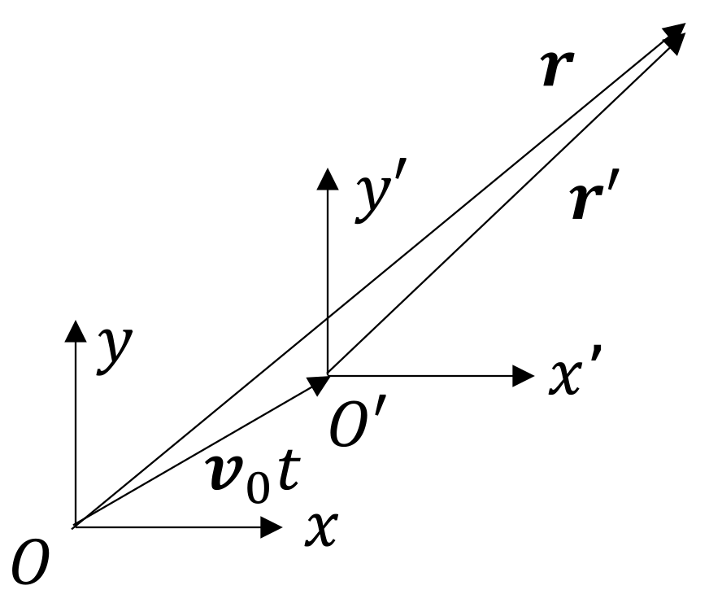
Equation \eqref{1move} is now written in terms of the unprimed coordinates, which are defined with respect to the primed coordinates by the Galilean transformation, \begin{align} \vec{r} &= \vec{r}' + \vec{v}_0 t' \label{2amove}\tag{2a}\\ t &= t'\,. \label{2bmove}\tag{2b} \end{align}
Taking the time derivative of Eq. \eqref{2amove} results in \(\dot{\vec{r}} = \dot{\vec{r}'} + \vec{v}_0\). Consider a one-dimensional case in which \(\dot{r'} = c_0\), the speed of sound in frame \(S'\). Then the speed in frame \(S\) is \(\dot{r} = c_0 + v_0\). Therefore, the speed of sound in \(S\) and \(S'\) is different if there is any motion between \(S\) and \(S'\). Note that this is not true for electromagnetic waves, i.e., the speed of light is the same in all inertial frames, motivating the linear transformation between two inertial frames that preserves this quantity (the Lorentz transformation).
In Cartesian coordinates, Eq. \eqref{2amove} is represented as \begin{align*} x &= x' + v_{0x}t'\\ y &= y' + v_{0y}t'\\ z &= z' + v_{0z}t' \end{align*} while Eq. \eqref{2bmove} remains the same. Consider the derivative of a scalar-valued test function of unprimed variables \(f(x,y,z,t)\) with respect to one of the spatial primed variables: \begin{align*} \frac{\partial }{\partial x'} f(x,y,z,t) &= \frac{\partial f}{\partial x}\frac{\partial x}{\partial x'} + \frac{\partial f}{\partial y}\frac{\partial y}{\partial x'} + \frac{\partial f}{\partial z}\frac{\partial z}{\partial x'} + \frac{\partial f}{\partial t} \frac{\partial t}{\partial x'}= \frac{\partial f}{\partial x}\,, \end{align*} i.e., they are unchanged, and thus the second spatial derivatives are also unchanged. Thus the sum of the second derivatives (the Laplacian in Cartesian coordinates) remains the same: \begin{equation}\label{space}\tag{\(\star\)} \Laplacianp = \Laplacian\,. \end{equation} Meanwhile, the derivative with respect to \(t'\) of a function of \(t\) is written in terms of unprimed quantities as \begin{align*} \frac{\partial f}{\partial t'} = \frac{\partial f}{\partial t} \frac{\partial t}{\partial t'} + \frac{\partial f}{\partial x} \frac{\partial x}{\partial t'} + \frac{\partial f}{\partial y} \frac{\partial y}{\partial t'} + \frac{\partial f}{\partial z} \frac{\partial z}{\partial t'} \,, \end{align*} which, upon noting that \begin{align*} \frac{\partial x}{\partial t'} &= \frac{\partial x}{\partial t} = \ex \cdot \vec{v}_0 = v_{0x}\,,\\ \frac{\partial y}{\partial t'} &= \dots = v_{0y}\,,\\ \frac{\partial z}{\partial t'} &= \dots = v_{0z}\,, \end{align*} becomes \begin{align*} \frac{\partial f}{\partial t'} &= \frac{\partial f}{\partial t} + \bigg(v_{0x}\frac{\partial }{\partial x} + v_{0y}\frac{\partial}{\partial y} + v_{0z} \frac{\partial}{\partial z} \bigg) f\\ &= \bigg(\frac{\partial}{\partial t} + \vec{v}_0\cdot \gradient\bigg)f\,. \end{align*} The second time derivative is therefore \begin{align}\label{time}\tag{\(\star\star\)} \frac{\partial^2}{\partial t'^2} = \bigg(\frac{\partial}{\partial t} + \vec{v}_0 \cdot \gradient\bigg)^{\!2} \,. \end{align} By Eqs. \eqref{space} and \eqref{time}, Eq. \eqref{1move} (the wave equation in frame \(S'\)) becomes, in frame \(S\), \begin{align}\label{3move}\tag{3} \boxed{\Laplacian p = \frac{1}{c_0^2} \bigg(\frac{\partial}{\partial t} + \vec{v}_0 \cdot \gradient\bigg)^{\!2} p\,,} \end{align} where \(p = p(\vec{r},t)\).
For \(p(\vec{r},t) = p_\omega(\vec{r}) e^{-i\omega t}\) (time-harmonic waves), Eq. \eqref{3move} becomes a Helmholtz-like equation, \begin{align*} \Laplacian p_\omega = \frac{1}{c_0^2}(-i\omega + \vec{v}_0 \cdot \gradient)^2 p_\omega\,, \end{align*} which can be written as \begin{align}\label{4move}\tag{4} \boxed{\Laplacian p_\omega + \bigg(\frac{\omega}{c_0} + i\vec{M}\cdot \gradient\bigg)^{\!2} p_\omega =0\,,} \end{align} where \(\vec{M} = \vec{v}_0/c_0\).
Attention is now turned to solving Eq. \eqref{3move}. Rather than directly solving the equation, consider Eq. \eqref{3move} in the absence of motion (\(\vec{v}_0 = 0\)), whose solution is \(p_\mathrm{NF}(\vec{r},t)\): \begin{align}\label{5move}\tag{5} \Laplacian p_\mathrm{NF} = \frac{1}{c_0^2} \frac{\partial^2 p_\mathrm{NF}}{\partial t^2}\,. \end{align} The transformation given by Eqs. \eqref{2amove} (inverted) and \eqref{2bmove} \begin{align}\tag{2'}\label{2move'} \vec{r}' = \vec{r}- \vec{v}_0t\,,\quad t' = t \end{align} accounts for the motion: \begin{align}\label{6move}\tag{6} p\NF(\vec{r}',t') = p\NF(\vec{r}- \vec{v}_0t,t)\,. \end{align} That is to say, Eq. \eqref{6move} is the pressure field in which the effects of motion have been accounted. Motion therefore generally "shears" the field, as illustrated below:
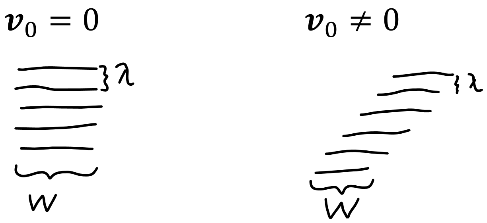
The following example illustrates how the simple substitution in Eq. \eqref{6move} gives the field in the moving medium.
In this example, sound in a laminar cross-flow between two parallel plates is considered. The flow profile is given by the function \(\vec{v}(z)\), as shown below:
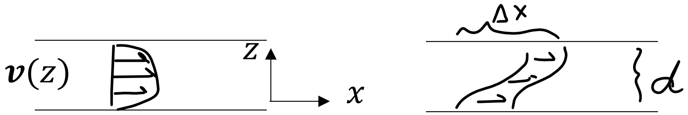
Since the sound field is translated (sheared) by the differential amount \begin{align*} dx = v\,dt = v \frac{dz}{c_0} = M(z) dz\,, \end{align*} the total shift is \begin{align*} \Delta x = \int_{0}^{d} M(z) dz\,. \end{align*} The laminar flow between parallel plates is (from fluid mechanics) \begin{align*} M(z) = M_0 (1 - 4z^2/d^2)\,,\quad -\frac{d}{2} \leq z \leq \frac{z}{2}\,, \end{align*} so the shift is \begin{align*} \Delta x &= 2M_0 \int_{0}^{d/2} \bigg(1 - 4\frac{z^2}{d^2}\bigg)dz = 2M_0 \bigg(z - \frac{4}{3}\frac{z^3}{d^2}\bigg)\bigg\rvert_{0}^{d/2}\\ &= \frac{2}{3} M_0 d\,. \end{align*} The solution to the wave equation is therefore given by the solution in the absense of flow, only displaced by the amount \(2M_0d/3\), i.e., \(p\NF(x - 2M_0d/3,z, t)\,.\)
Now suppose the flow profile is constant, i.e., \(M = M_0 = \) constant. Thus \(\Delta x = M_0 d\). So, the solution to the wave equation in that case is \(p\NF(x - M_0d,z, t)\,.\)
The Doppler effect is simply a consequence of the motion between two inertial frames of reference.
Consider a plane wave propagating in direction \(\vec{k}\) in a frame \(S'\) that is moving with velocity \(\vec{v}_0\) with respect to \(S\), where \(\theta\) is the angle between the direction of the motion [i.e., \(\theta = \arccos({\vec{k}\cdot \vec{v}_0/kv_0})\)], \begin{align} p(\vec{r}',t) &= A e^{-i\omega(t - \vec{n}\cdot \vec{r'}/c_0)} \notag\\ &= Ae^{i(\vec{k}\cdot\vec{r}' - \omega' t)}\,, \label{7doppler}\tag{7} \end{align} where \(\vec{n}\) is the normal to the wavefront, \(\vec{k}= \omega'\vec{n}/c_0\) is the wavenumber, and \(\lambda = 2\pi/|\vec{k}| = 2\pi c_0/\omega'\) is the wavelength, as illustrated below. Note that \(\lambda\) is the same in both \(S\) and \(S'\), but the speed of sound is \(c_0 + v_0\) in the moving frame [by Eq. \eqref{2amove}], and the frequency measured in frame \(S\) will be different from that measured in frame \(S'\). The motion between frames causes the number of crests and troughs encountered per unit time by the observer in frame \(S\) and \(S'\) to be different. Since the number of events per unit time is by definition frequency, it is the frequency that varies between frame \(S\) and \(S'\).
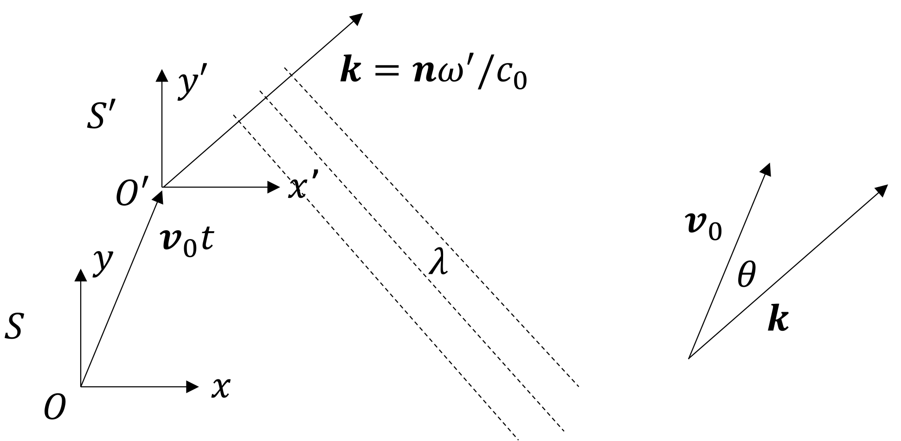
Substituting the plane wave given by Eq. \eqref{7doppler} into the Helmholtz equation in frame \(S\) [Eq. \eqref{4move}] with \begin{align*} p_\omega = A e^{i\vec{k}\cdot \vec{r}'}\,, \quad \vec{M}= \frac{\vec{v_0}}{c_0}\,,\quad \vec{k} = \frac{\omega'}{c_0}\vec{n}\,, \end{align*} requires the following quantities to be calculated: \begin{align*} \Laplacian p_\omega &= \Laplacianp p_\omega = -k^2 p_\omega = -(\omega'/c_0)^2 p_\omega\\ i\vec{M}\cdot \gradient &= i\vec{M} \cdot \gradient' = i\vec{M} \cdot (i\omega' \vec{n}/c_0) = -M (\omega'/c_0) \cos\theta\,. \end{align*} Upon making these substitutions, Eq. \eqref{4move} becomes \begin{align*} -(\omega'/c_0)^2 + [\omega/c_0 - M (\omega'/c_0) \cos\theta ]^2=0\,. \end{align*} Solving for \(\omega\) and tossing the negative solution yields \(\omega - M \omega' \cos\theta = \omega'\) or \begin{align*} \boxed{\omega = (1 + M\cos\theta)\omega'\,.} \end{align*} Thus it has been shown that a Galilean transformation of the wave equation results in the frequency between two frames to be related through \(\omega = (1 + M\cos\theta)\omega'\).Alternatively, the Doppler shift can be derived by applying the Galilean transformation to the plane-wave solution of the wave equation (See Morse & Ingard, page 700). Start with the plane wave in the moving frame \(S'\), \begin{align*} p = A e^{i\vec{k}\cdot \vec{r}' - i\omega ' t}\,, \end{align*} where \(\vec{k} = \omega' \vec{n}/c_0\). Substituting in \(\vec{r}' = \vec{r} - \vec{v}_0 t\) into the equation for the plane wave gives \begin{align*} p = A e^{i\vec{k}\cdot \vec{r} - i(\omega' + \vec{k}\cdot \vec{v}_0) t} \equiv A e^{i(\vec{k} \cdot \vec{r} - \omega t)}\,, \end{align*} where it has been identified that \begin{align*} \omega &\equiv \omega' + \vec{k} \cdot \vec{v}_0 \\ &= \omega' + \frac{\omega'}{c_0} \vec{n} \cdot \vec{v}_0\\ &= (1 + M\cos\theta)\omega'\,. \end{align*}
As mentioned in the beginning of this section, the Doppler shift is a natural consequence of the motion between two inertial frames of reference. The theory is blind to the nature of the motion i.e., whether it is due to the medium flowing past a stationary observer, or due to the observer moving through a stationary medium. Those two scenarios are kinematically equivalent (See the fourth paragraph on page 699 in Morse).
This checks with everyday experience. An example of the Doppler effect arising due to the medium flowing past a stationary observer is the sound of wind "howling." Imagine you are standing in a prairie and the wind begins to blow, creating a whistling/howling sound (Such tones are generated by turbulent flow of air as the wind hits your ear, which is beside the point). The stronger the wind, the higher the frequency of the howl, and when the wind dies down, the howl frequency decrease. The wind is in the frame of reference \(S'\), and the governing wave equation is that frame is Eq. \eqref{1move}. You are in the frame of reference \(S\), and the governing wave equation in your frame is Eq. \eqref{3move}.
Now suppose there is no wind in the prairie, but that you are now running through the prairie. If you run at the same speed at which the wind was previously blowing, you will hear exactly the same sound as what was described in the previous paragraph. You are still in the frame of reference \(S\), and the world around you is still in the frame \(S'\).
A practical problem involving waves in moving media is that of sound in ducts (e.g., air conditioning ducts, pipelines, etc.), for which the bulk fluid motion is in one direction, and in which modal solutions exist in the transverse directions. This topic is covered in Morse and Ingard, pages 714-715, or Ingard, page 317-319.
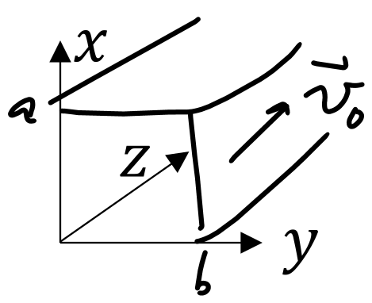
For fluid motion in the \(z\) direction, as depicted in the figure below, the Helmholtz equation describing sound in frame \(S\) becomes \begin{align} \Laplacian p_\omega &= -\bigg(\frac{\omega}{c_0} + i\vec{M} \cdot \gradient \bigg)^2 p_\omega\notag\\ &= -\bigg(\frac{\omega}{c_0} + iM \frac{\partial}{\partial z}\bigg)^2 p_\omega\,.\label{1duct}\tag{1} \end{align} A dispersion relation \(k_z(\omega)\) is sought by assuming Eq. \eqref{1duct} has solutions of the form \begin{align*} p_\omega = A \cos \frac{m\pi x}{a} \, \cos \frac{n\pi y}{b} e^{ik_zz}\,. \end{align*} Substitution into Eq. \eqref{1duct} gives, on the left-hand side, \begin{align*} \bigg[-\bigg(\frac{m\pi}{a}\bigg)^2 -\bigg(\frac{n\pi}{b}\bigg)^2 -k_z^2 \bigg]p_\omega = -\bigg(\frac{\omega_{mn}^2}{c_0^2} + k_z^2\bigg)p_\omega\,, \end{align*} where \begin{align*} \omega_{mn} = \sqrt{\bigg(\frac{m\pi c_0}{a}\bigg)^2 + \bigg(\frac{n\pi c_0}{b}\bigg)^2 }\,, \end{align*} which is the cutoff frequency for \(v_0 = 0\). Meanwhile, the right-hand side of Eq. \eqref{1duct} becomes, \begin{align*} - (\omega/c_0 + iM \partial/\partial z)^2 p_\omega = -(\omega/c_0 - M/k_z)^2 p_\omega\,. \end{align*} Thus one obtains from the Helmholtz equation a dispersion relation: \begin{align*} \frac{\omega_{mn}^2}{c_0^2} + k_z^2 &= \bigg(\frac{\omega}{c_0} - M k_z \bigg)^2\\ &= \frac{\omega^2}{c_0^2} - 2M \frac{\omega}{c_0} k_z + M^2 k_z^2\,. \end{align*} Rearranging the above yields \begin{align*} (1-M^2)k_z^2 + 2M \frac{\omega}{c_0} k_z - \bigg(\frac{\omega^2}{c_0^2} - \frac{\omega^2_{mn}}{c_0^2}\bigg)\,, \end{align*} which is solved for \(k_z\) by the quadratic formula: \begin{align}\label{kmove}\tag{2} \boxed{k_z = \frac{\omega/c_0}{1 - M^2} \bigg( \sqrt{1 - {\Omega_{mn}^2}/{\omega^2}} - M\bigg)\,,} \end{align} where \(\Omega_{mn} = \sqrt{1 - M^2} \,\, \omega_{mn}\), which is the cutoff frequency for \(v_0 \neq 0\), and where the \(\pm\) sign corresponds to the propagation direction. As a sanity check, note that for \(M =0\) (no flow), one obtains \[k_z = \pm \frac{\omega}{c_0}\sqrt{1 - \omega_{mn}^2/\omega^2}\,,\] which is the familiar projection of the wavenumber in the \(z\) direction in a waveguide (from Acoustics I/II).
The phase speed and group speeds are \begin{align*} c_\mathrm{ph} &= \omega/k_z = \frac{(1-M^2)c_0}{\pm \gamma - M}\,, \quad \gamma = \sqrt{1 - \Omega_{mn}^2/\omega^2}\,.\\ c_\mathrm{gr} &= \frac{d\omega}{dk_z} = \frac{1}{dk_z/d\omega} = \frac{\gamma (1-M^2) c_0}{\pm 1 - \gamma M}\,. \end{align*} For this discussion, consider only \(+\) direction propagation. Then, as another sanity check, for \(\omega \to \infty\), \(\gamma \to 1\), for which the sound propagation is non-dispersive, i.e., \begin{align*} c_\mathrm{ph} = c_\mathrm{gr} = (1+M) \, c_0 = c_0 + v\,, \end{align*} which checks with intuition, i.e., the energy travels at the speed that is the sum of the wave speed and the ambient speed. Meanwhile, the cutoff frequency is the frequency at which the group velocity vanishes, which corresponds to setting \(\gamma = 0\), for which \begin{align*} \omega_c = \Omega_{mn} = \sqrt{1 - M^2} \, \omega_{mn}\,. \end{align*} Then, from Eq. \eqref{kmove}, for \(\omega \leq \omega_c = \Omega_{mn}\), \begin{align*} k_z = \frac{\omega/c_0}{1 - M^2} \big[i \sqrt{({\Omega_{mn}/\omega})^2 - 1} - M\big]\,. \end{align*} The above equation is an interesting result, since it shows that evanescent waves "sail" along with the motion of the fluid in the \(z\) direction at the speed \(v_0\). In this sense, the evanescent waves propagate, because their wavenumber has a real component.
Now the refraction of sound is discussed in the context of a medium with flow. This topic is covered in Morse and Ingard, pages 708-710.
Consider the incident and transmitted plane waves, \begin{align*} p_i &= A_i e^{i\vec{k}_1 \cdot \vec{r}}\\ p_t &= A_t e^{i\vec{k}_2 \cdot \vec{r}}\,, \end{align*} where for \(n = 1,2\), \begin{align*} \vec{k}_n = k_n (\sin\phi_n \ex + \cos\phi_n \ey)\,, \end{align*} as illustrated below:
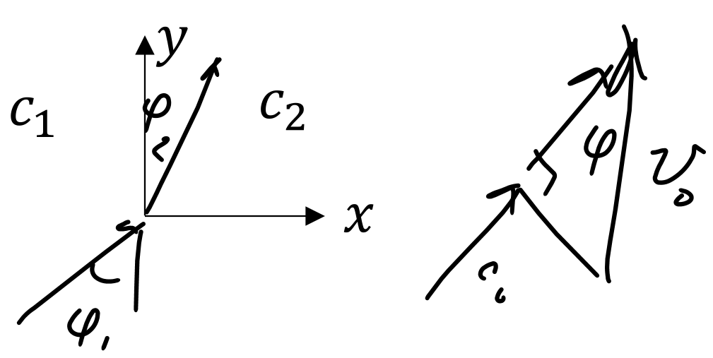
The Helmholtz equation in frame \(S\), \begin{align*} \Laplacian p_\omega = -\bigg(\frac{\omega}{c_0} + i\vec{M} \cdot \gradient\bigg)^{\! 2} p_\omega\,, \end{align*} when assuming spatially harmonic solutions (\(\gradient \mapsto i\vec{k}\)) and denoting the Mach number as \(\vec{M} = \vec{v}_0/c_0\), becomes \begin{align*} -k^2 p_\omega &= - \bigg(\frac{\omega}{c_0} - \vec{M}\cdot \vec{k} \bigg)^{\! 2} p_\omega = -\bigg( \frac{\omega}{c_0} - M k \cos\phi\bigg)^{\! 2} p_\omega\,, \end{align*} where it has been noted that the angle between the direction of the wave propagation and the motion is \(\phi = \arccos{(\vec{M}\cdot\vec{k}/Mk)}\). Thus \begin{align*} k = \frac{\omega}{c_0} - Mk\cos\phi\,, \end{align*} which, solving for \(k\), yields \begin{align}\label{a refract}\tag{a} k = \frac{\omega/c_0}{1 + M\cos\phi} = \frac{\omega}{c_0 + v_0\cos\phi}\,. \end{align} The original equations for \(p_i\) and \(p_t\) are now evaluated at \(x = 0\), and the continuity of the pressure field is enforced: \begin{align*} A_i e^{ik_1 y\cos\phi_1} = A_t e^{ik_2 y\cos\phi_2}\,. \end{align*} To satisfy this equation, the phases must match \begin{align}\label{b refract}\tag{b} k_1 \cos\phi_1 = k_2 \cos\phi_2\,. \end{align} Combining Eqs. \eqref{a refract} and \eqref{b refract} yields \begin{align*} \frac{\omega \cos\phi_1}{c_1 + v_1 \cos\phi_1} = \frac{\omega \cos\phi_2}{c_2 + v_2 \cos\phi_2}\,. \end{align*} which, solving for \(\cos\phi_2\) (requires about five lines of algebra), reads \begin{align*} \cos\phi_2 = \frac{c_2 \cos\phi_1}{c_1 - \Delta v \cos\phi_1} \end{align*} where \(\Delta v = v_2- v_1\). The critical angle, which is the \(\phi_{1c}\) that sets \(\phi_2 = 0\), can therefore be found: \begin{align*} c_2 \cos\phi_{1c} = c_1 - \Delta v \cos\phi_{1c} \implies \cos\phi_{1c} &= \frac{c_1}{c_2 + \Delta v}\,. \end{align*}
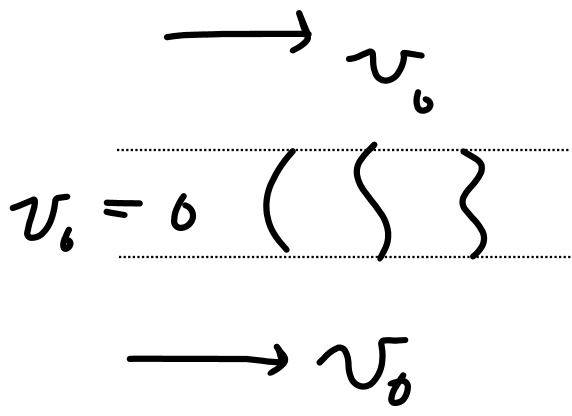
Assuming the sound in the middle layer in which \(v_0=0\) is confined to angles smaller than the critical angle, the interfaces with the moving media serve as idealized boundaries. Thus, modes can develop in the middle layer, and the moving medium engulfing the stationary channel act as walls of a waveguide for sound.
Interestingly, the flow at the boundary of two media results in nonreciprocity (also known as "broken symmetry"), which refers to the exchange of source and observer having an effect on the measured signal. This is illustrated by example below.
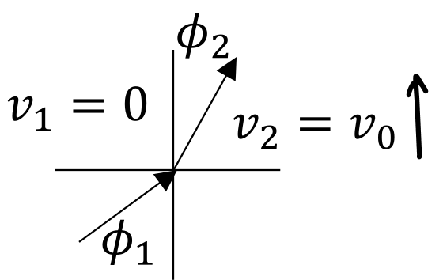
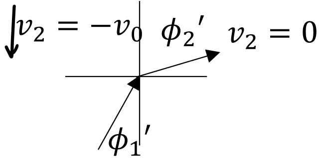
The full situation is written below, following Fig. 11.5 in Morse and Ingard (but beware of the typo in their figure: \(\phi_2\) on the LHS should be primed).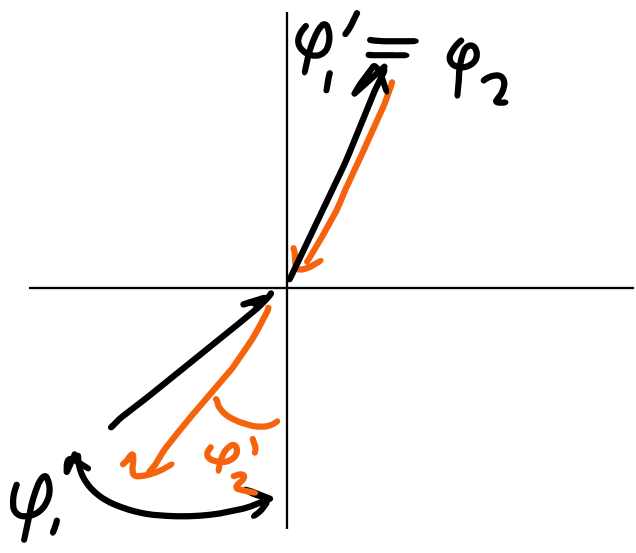
Radiation (and lack thereof) from bending waves in flow is now discussed. See pages 705-708 of Morse and Ingard for more on this topic.
The displacement of the bending wave is given by \begin{align} \xi &= \xi_0 e^{-i\omega(t - y/c_t)} \notag\\ &= \xi_0 e^{i(k_t y - \omega t)}\,,\quad k_t = \omega/c_t\,, \tag{1}\label{1bend} \end{align} as depicted below:
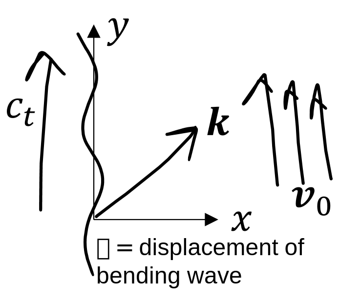
The pressure wave radiated into the fluid is a plane wave (since the plate is considered to be infinite), \begin{align*} p = A e^{i\vec{k}\cdot \vec{r} - \omega t} \end{align*} which in the Helmholtz domain is \begin{align} p_\omega = A e^{ik(x\sin\phi + y\cos\phi)}\,. \tag{2}\label{2bend} \end{align} \(p_\omega\) satisfies the Helmholtz equation with \(\vec{v}_0 = v_0 \ey\): \begin{align*} \Laplacian p_\omega = -(\omega/c_0 + i \vec{M}\cdot \gradient)^2 p_\omega\,. \end{align*} Thus \begin{align} k = \frac{\omega/c_0}{1 + M\cos\phi} = \frac{\omega}{c_0 + v_0\cos\phi}\,.\label{3abend}\tag{3a} \end{align} At the boundary \(x = 0\), the field must be continuous, requiring that \begin{align*} k_t = k\cos\phi \implies \frac{\omega}{c_t} = \frac{\omega \cos\phi}{c_0 + v_0\cos\phi}\,, \end{align*} which, upon rearranging, gives \begin{align}\label{3bbend}\tag{3b} \cos\phi = \frac{c_0}{c_t - v_0}\,. \end{align} Thus, for sound to radiate from the plate, \begin{align*} \boxed{c_t > c_0 + v_0\,.} \end{align*} Otherwise, \(\sin\phi = \sqrt{1- \cos^2\phi}\), which is imaginary and corresponds to evanescent waves.
Now the amplitudes \(A\) and \(\xi_0\) are related to each other. Following Morse and Ingard's approach, the (exact) momentum equation is appealed to: \begin{align*} \rho \frac{D\vec{u}}{Dt} = \rho \frac{D^2 \vecxi}{D t^2} = -\gradient P\,, \end{align*} where \(D/Dt = \partial/\partial t + (\vec{v}_0 + \vec{u})\cdot \gradient\) is the material derivative. Linearization results in \begin{align*} \rho_0 \bigg(\frac{\partial}{\partial t} + \vec{v}_0 \cdot \gradient \bigg)^2 \vecxi = -\gradient p\,. \end{align*} Since \(\vecxi\) and \(\vec{v}_0\) are perpendicular, i.e., \(\vecxi = \xi\ex\) and \(\vec{v} = v_0\ey\), the momentum equation reduces to \begin{align} \frac{\partial p}{\partial x} &= -\rho_0 (i\omega + v_0 \partial/\partial y)^2 \notag\\ &=-\rho_0 (-i\omega + ik_z v_0)^2 \xi \notag\\ &= \frac{\rho_0 \omega^2}{c_t^2} (c_t - v_0)^2 \xi \tag{4}\label{4bend} \end{align} From Eq. \eqref{2bend}, \begin{align} \frac{\partial p}{\partial x} &= ik\sin(\phi )p\,,\quad k = k_t/\cos\phi\notag\\ &= i\frac{\omega \sin\phi}{c_t \cos\phi}p \notag\\ &= i \frac{\omega}{c_t} \frac{\sqrt{1- \cos^2\phi}}{\cos\phi} \notag\\ &= i\frac{\omega}{c_t} \bigg[\frac{1}{\cos\phi} - 1\bigg]^{1/2} \notag\\ &= i\frac{\omega}{c_t c_0} \big[(c_t - v_0)^2 - c_0^2\big]^{1/2} p\,. \tag{5}\label{5bend} \end{align} Now, Eq. \eqref{4bend} is equated to Eq. \eqref{5bend}, resulting, at \(x= 0\), in \begin{align*} i \frac{\omega}{c_t c_0} \sqrt{(c_t-v_0)^2 - c_0^2} \, A = \frac{\rho_0\omega^2}{c_t^2}(c_t - v_0)^2 \xi_0\,. \end{align*} Solving for \(A\) results in \begin{align*} \boxed{A = \rho_0c_0u_0 \frac{(c_t - v_0)^2}{c_t \sqrt{(c_t - v_0)^2 -c_0^2}}\,, } \end{align*} where \(u_0 = -i\omega \xi_0\), which is the plate's particle velocity.
As a sanity check, eliminate the flow, i.e., \(v_0 = 0\): \begin{align*} A = \frac{\rho_0c_0u_0}{\sqrt{1- c_0^2/c_t^2}} \,,\quad \cos\phi = c_0/c_t\,. \end{align*} This matches previous results for a bending wave in a stationary medium.
Now consider the case in which \(c_t = 0\), which corresponds to steady flow across a stationary corrugated surface. Since \(k_t = \omega/c_t\) (which would go to \(\infty\) in the limit that \(c_t=0\)), define \begin{align*} k_t = \omega/c_t= 2\pi/L \implies \omega = \frac{2\pi c_t}{L}\,, \end{align*} where \(L\) is the spatial period of the corrugation. Then, \begin{align*} u_0 = -i\omega \xi_0 = -i \frac{2\pi c_t}{L}\xi_0\,, \end{align*} so \begin{align*} A &= -i2\pi \rho_0c_0 \xi_0 \frac{(c_t-c_0)^2}{L\sqrt{(c_t-v_0)^2 -c_0^2}} \bigg\rvert_{c_t \to 0}\\ &=-i2\pi \rho_0c_0 \xi_0 \frac{v_0}{L \sqrt{v_0^2- c_0^2}}\\ &= 2\pi \rho_0c_0^2 \frac{\xi_0}{L} \frac{M^2}{\sqrt{1-M^2}}\,,\quad M = v_0/c_0\,.\\ &\to 0\,, \quad M\to 0 \end{align*} Note that \begin{align*} k_y &= k\cos\phi = k_t = 2\pi/L\\ k_x &= k\sin\phi = \sqrt{k^2 - (2\pi/L)^2}\,. \end{align*} Thus \begin{align*} k &= \frac{\omega}{c_0 + v_0\cos\phi}\,,\quad \cos\phi = \frac{1}{c_t - v_0}\\ &= \frac{\omega(c_t - v_0)}{c_0(c_t - v_0) + v_0 c_)}\\ &= \frac{\omega}{c_t} \frac{c_t -v_0}{c_0}\\ &\to \frac{2\pi}{L} (-v_0/c_0)\,,\quad c_t\to 0 \end{align*} After some algebra it is found that \begin{align*} k_x &= \frac{2\pi}{L}\sqrt{M^2 - 1}\\ &= i\frac{2\pi}{L} \sqrt{1-M^2}\,, 1 > M \text{ (subsonic)}. \end{align*} Thus the radiated sound field, \begin{align*} \boxed{p(x,y,t) = 2\pi \rho_0c_0^2 \frac{\xi_0}{L} \frac{M^2}{\sqrt{1- M^2}}e^{-(1-M^2)^{1/2}2\pi x/L} e^{i2\pi y/L}\,,\quad 1>M} \end{align*} Note that the wave is stationary in space (e.g., in the frame \(S\)). It is sinusoidal in \(y\) and exponential decay in \(x\). Thus, no power is radiated by the plate. The penetration depth in the \(x\) direction is \(d \sim L/2\pi\sqrt{1-M^2}\), which is \(\infty\) for \(M = 1\) (the condition at which radiation begins).
Meanwhile, for \(M > 1\), \begin{align*} p(x,y,t)\propto e^{i\frac{2\pi}{L}(-\sqrt{M^2- 1}\,x + y)}\,, \end{align*} with the fluid field depicted below:
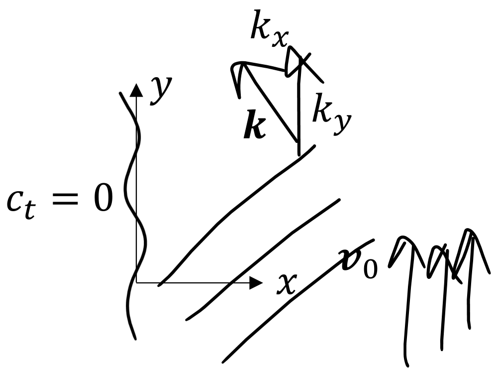
Now the radiation due to a piston in a crossflow is studied. Determining the boundary condition for the piston is essential to this problem, as Ingard showed. See pages 715-716 in Morse and Ingard (and Ingard, pages 405-409).
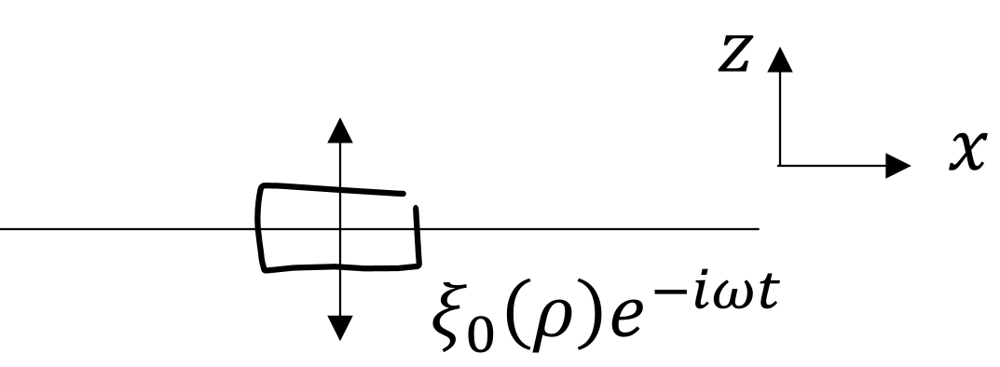
Ingard pointed out that the fundamental boundary condition is on the displacement field, not the velocity. Note that the velocity field is given in terms of the displacement field by \begin{align} \vec{u} &= \frac{D\vecxi}{Dt} = \bigg(\frac{\partial }{\partial t} + \vec{v}_0 \cdot \gradient\bigg) \vecxi\,, \label{eq:disp}\tag{1} \end{align} and let the \(z\) component of the displacement be \begin{align*} \xi_z\big\rvert_{z=0} = \xi_0(\rho) e^{-i\omega t}\,. \end{align*} Consider the source condition \begin{align*} \xi_0(\rho) = \xi_0 \circfn (\rho/a) = \xi_0 H(a- \rho) \end{align*} and suppose the crossflow is oriented purely in the \(x\) direction, i.e., \(\vec{v}_0 = v_0 \ex\). Then, from Eq. \eqref{eq:disp}, the velocity in the \(z\) direction is \begin{align} u_0(\rho,\phi) &= (-i\omega + v_0 \partial/\partial x) \xi_0 H(a-\rho)\notag\\ &= [1 + i(M/k)\partial/\partial x] u_0 H(a-\rho)\,, \tag{2}\label{eq:subitin} \end{align} where \(M = v_0/c_0\) and \(u_0 = -i\omega \xi_0\). The derivative of the step function is taken, noting that a delta function arises at \(\rho = a\), and that \(x = \rho\cos\phi\): \begin{align*} \frac{\partial}{\partial x} H(a-\rho) &= \delta(a - \rho) (-\partial \rho/\partial x) \,,\quad \rho = (x^2 + y^2)^{1/2}\\ &= \delta (a-\rho) (-2x/2\rho)\\ &= -\delta(\rho-a)\cos\phi\,. \end{align*} Combining the above result with Eq. \eqref{eq:subitin} shows that the velocity field at the boundary is \begin{align}\label{eq:cross:u}\tag{3} u_0(\rho,\phi) &= u_0 [H(a-\rho) - i (M/k) \delta(\rho-a) \cos\phi ]\,. \end{align} where \(\phi\) is the polar angle in the \(x\)-\(y\) plane. Thus the velocity at the boundary imparts a dipolar radiation pattern.
To calculate the radiated field, first note that the angular spectrum of the source condition given by Eq. \eqref{eq:cross:u} is \begin{align} U_0(k_x, k_y) = [1+ i (M/k) ik_x] u_0 \, \FTxy \{H(a-\rho)\}\,, \end{align} where the factor of \(ik_x\) appears in the above by the sifting property of the delta function when the spatial Fourier transform is taken. Noting that \begin{align*} \FTxy \{H(a-\rho)\} = \pi a^2 \frac{2 J_1(\kappa a)}{\kappa a}\,,\quad \kappa = \sqrt{k_x^2 + k_y^2}\,, \end{align*} the angular spectrum becomes \begin{align*} U_0(k_x,k_y) &= \pi a^2 u_0\, (1 - Mk_x/k) \frac{2 J_1\big[(k_x^2 + k_y^2)^{1/2}\, a\big]}{(k_x^2 + k_y^2)^{1/2}\, a} \end{align*} The spectrum width is of order \(1/a\) in \(k\)-space, so \(k_x\) is also of order \(1/a\). Thus \begin{align*} \frac{\text{edge effect}}{\text{surface effect}} = \Order(M/ka)\,. \end{align*} That is to say, the edge effect becomes important for \(ka \ll 1\).
The pressure field is thus \begin{align*} p_\omega(x,y,z) &= \rho_0c_0 \IFTxy \bigg\{\frac{k_0-Mk_x}{k_z} U_0(k_x,k_y) e^{ik_zz}\bigg\}\\ k_z &= \sqrt{(k_0 - Mk_x)^2 - k_x^2 - k_y^2}\,,\quad k_0 = \omega/c_0\,. \end{align*} From the 2D spatial Fourier transform of momentum equation, \begin{align*} \vec{U} &= \frac{\vec{k}P}{\rho_0 c_0 (k_0 - \vec{M} \cdot \vec{k})} \\ k_z &= \sqrt{(k_0 - \vec{M}_\perp \cdot \veckappa)^2 - \kappa^2} \end{align*} where \(\vec{M}_\perp = M_x \ex + M_y\ey\)